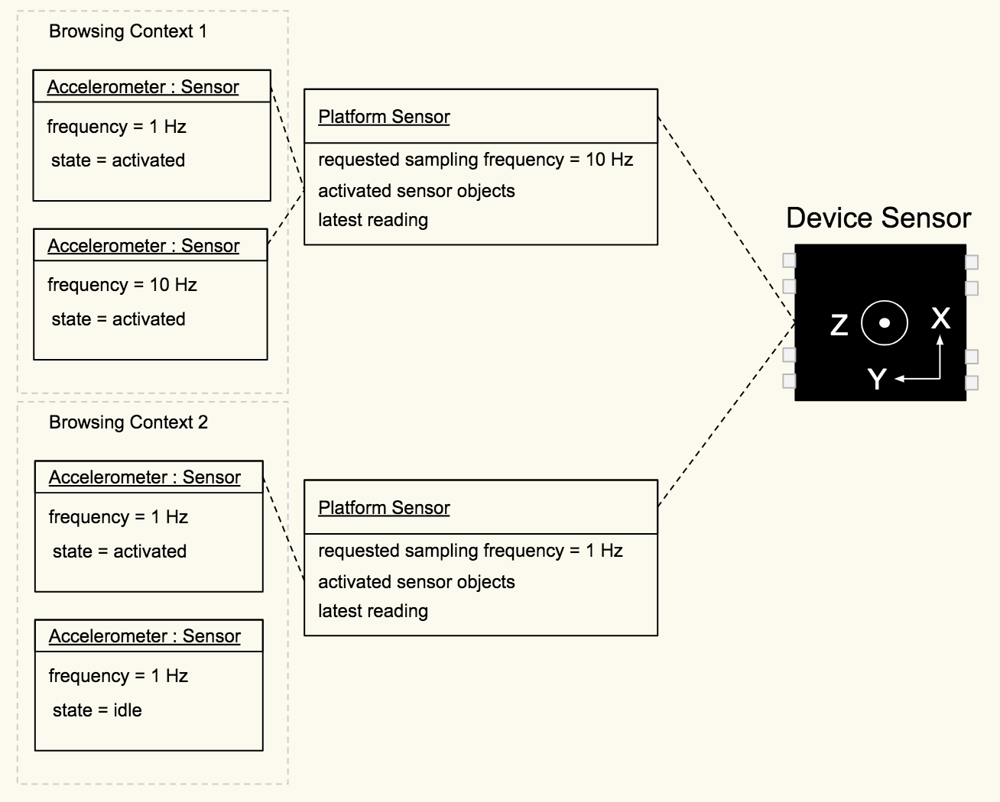

Generic Sensor API
W3C Candidate Recommendation
Webtechnologien Sommersemester 2018
Sascha Lemke
Workshop Agenda
- Generic Sensor API
- Spezifikation
- Sensoren
- Anwendung
- Coding
Generic Sensor API
Worum geht es bei der API?
Generic Sensor API
- Abstraktes Interface für Sensoren
- Einheitlicher Zugriff
- Nutzung in "headless environments" (Terminal, Nodejs, ...)
Wie sieht es denn aktuell aus?
- Ambient Light Sensor API
- Battery Status API
- Geolocation API
- Proximity API
- Device Orientation API
- Vibration API
- ...
Ambient Light Sensor
window.addEventListener('devicelight', function(event) {
console.log(event.value);
});Spezifikation
Definition von Sensoren
Device Sensor
- Bezeichnet den Sensor im Gerät
- Sensordaten enthalten die Informationen des Sensors, sowie einen Zeitstempel
Platform Sensor
- Bezeichnet Schnittstelle der Plattform
- Wird verwendet um die Daten ein oder mehrerer Sensoren abzurufen
- Stellt eine Abstraktion des physischen Sensors dar
Mögliche Implementierung
 Bildquelle: Generic Sensor API Candidate RecommendationDefault Sensor
let sensor = new Accelerometer();
Alternative Sensoren
const sensor = new DirectTirePressureSensor({
position: "rear",
side: "left"
});
Privatsphäre und Sicherheit
- Location Tracking
- Eavesdropping
- Keystroke Monitoring
- Device Fingerprints
- User Identifying
Weitere Punkte
- HTTPS ist eine Grundvoraussetzung
- Die API nutzt die Feature Policy
- Sensordaten können nur in einem sichtbaren Frame abgerufen werden
Sensoren
Welche Möglichkeiten habe ich nun?
Neue Standards
Gyroscope

Bildquelle: developers.google.com
Accelerometer

Bildquelle: developers.google.com
Orientation

Bildquelle: developers.google.com
Anwendung
Abfragen von Sensordaten im Code
Generic Sensor API
interface Sensor : EventTarget {
readonly attribute boolean activated;
readonly attribute boolean hasReading;
readonly attribute DOMHighResTimeStamp? timestamp;
void start();
void stop();
attribute EventHandler onreading;
attribute EventHandler onactivate;
attribute EventHandler onerror;
};
dictionary SensorOptions {
double frequency;
};Sensor Lifecycle

Bildquelle: Generic Sensor API Candidate Recommendation
Gyroscope
let sensor = new Gyroscope();
sensor.start();
sensor.onreading = () => {
console.log("Angular velocity (X-axis) " + sensor.x);
console.log("Angular velocity (Y-axis) " + sensor.y);
console.log("Angular velocity (Z-axis) " + sensor.z);
};
sensor.onerror = event => {
console.log(event.error.name, event.error.message);
};
Accelerometer
let sensor = new Accelerometer();
sensor.start();
sensor.onreading = () => {
console.log("Acceleration along X-axis: " + sensor.x);
console.log("Acceleration along Y-axis: " + sensor.y);
console.log("Acceleration along Z-axis: " + sensor.z);
};
sensor.onerror = event => {
console.log(event.error.name, event.error.message);
};
Ambient Light Sensor
const sensor = new AmbientLightSensor();
sensor.onreading = () => console.log(sensor.illuminance);
sensor.onerror = event => console.log(
event.error.name,
event.error.message
);
sensor.start();
Orientation Sensor
const sensor = new AbsoluteOrientationSensor();
const mat4 = new Float32Array(16);
sensor.start();
sensor.onerror = event => console.log(
event.error.name,
event.error.message
);
sensor.onreading = () => {
sensor.populateMatrix(mat4);
};
Magnetometer
let sensor = new Magnetometer();
sensor.start();
sensor.onreading = () => {
console.log("Magnetic field along the X-axis " + sensor.x);
console.log("Magnetic field along the Y-axis " + sensor.y);
console.log("Magnetic field along the Z-axis " + sensor.z);
};
sensor.onerror = event => {
console.log(event.error.name, event.error.message);
};
Coding
Der praktische Teil des Workshops
Sind alle Teilnehmer bereit?
Setup (Chrome)
- Google Chrome auf einem Smartphone/Tablet installieren
- Google Chrome auf Version 67 aktualisieren
- Flags in Chrome aktivieren
- Google Chrome neu starten
Setup Git (1)
- Bei Github registrieren (https://github.com/)
Setup Git (2)
- Git herunterladen (https://git-scm.com/)
- Git installieren (Defaults sind ausreichend)
- Terminal öffnen
$ git config --global user.name "John Doe"
$ git config --global user.email johndoe@example.comSetup Git (3)
- Repository auf Github forken
(https://github.com/slemke/generic-sensor-api-workshop)
$ git clone https://github.com/username/generic-sensor-api-workshopSetup erfolgreich!
Implementierung #1
Lesen von Sensorendaten. Folgende Ziele:
- Ausgeben von Daten des Accelerometers
- Ausgeben von Daten des Gyroscopes
Wichtige Aufrufe
const sensor1 = new Accelerometer();
const sensor2 = new Gyroscope();
sensor.x // enthält den x Wert
sensor.y // enthält den y Wert
sensor.z // enthält den z Wert
sensor.onreading = () => {};
sensor.onerror = event => {};
Implementierung #2
Wir implementieren einen Dark Mode! Folgende Ziele:
- Mit dem Ambient Light Sensor das Umgebungslicht abfragen
- Die Styles der Webseite anpassen, wenn die Umgebung zu dunkel wird (<= 150 Lux)
Wichtige Aufrufe
const sensor = new AmbientLightSensor();
sensor.illuminance // enthält den Lichtwert
sensor.onreading = () => {};
sensor.onerror = event => {};